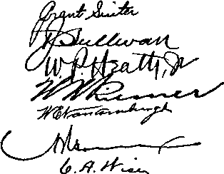

nr
Semimonthly
No. 20
OCTOBER 15, 1939
4
3
is
Discontinue Information Marches ......306
306
©WTB. & TS.
raw/wam
CONTENTS
Doom of Religion (Part 9).........
The Charge .................................
Slaughter .....................................
Refuge .........................................
Blessings.......................................
Increasing Blessings .................
Satan’s Organization .................
Victory .........................................
Information..................................
Who Interprets the Bible!.....
Letters ...........................................
Field Experiences.......................
“Theocracy” Testimony Period “Government and Peace”...........
I1 C.1.1 eit “Ezekiel 35:15
Announcing y
Jehovah’s KngdomO^
Vol. LX
“Watchtower” Studies
307 308
309 310
311 312
313 314
316 317
319 320
306 306
ff k
Published Semimonthly By
WATCH TOWER BIBLE & TRACT SOCIETY 117 Adams Street • • Brooklyn, N.Y., U.S.A.
OFFICERS
J. F. Rutherford, President_______W. E. Van Amburgh, Secretary
“And all thy children shall be taught of Jehovah; and great shall be the peace of thy children.” - haiah 54:13.
THE SCRIPTURES CLEARLY TEACH
THAT JEHOVAH is the only true God, is from everlasting to everlasting, the Maker of heaven and earth and the Giver of life to his creatures; that the Logos was the beginning of his creation, and his active agent in the creation of all things; that the Logos is now the Lord Jesus Christ in glory, clothed with all power In heaven and earth, and the Chief Executive Officer of Jehovah.
THAT GOD created the earth for man, created perfect man for the earth and placed him upon it; that man willfully disobeyed God’s law and was sentenced to death; that by reason of Adam’s wrong act all men are born sinners and without the right to life.
THAT JESUS was made human, and the man Jesus suffered death in order to produce the ransom or redemptive price for obedient ones of mankind; that God raised up Jesus divine and exalted him to heaven above every creature and above every name and clothed him with all power and authority.
THAT JEHOVAH’S ORGANIZATION is a Theocracy called Zion, and that Christ Jesus is the Chief Officer thereof and is the rightful King of the world; that the anointed and faithful followers of Christ Jesus are children of Zion, members of Jehovah’s organization, and are his witnesses whose duty and privilege it is to testify to the supremacy of Jehovah, declare his purposes toward mankind as expressed in the Bible, and to bear the fruits of the kingdom before all who will hear.
THAT THE WORLD has ended, and the Lord Jesus Christ has been placed by Jehovah upon his throne of authority, has ousted Satan from heaven and is proceeding to the establishment of God’s kingdom on earth.
THAT THE RELIEF and blessings of the peoples of earth can come only by and through Jehovah’s kingdom under Christ, which has now begun; that the Lord’s next great act Is the destruction of Satan’s organization and the establishment of righteousness in the earth, and that under the kingdom the people of good will that survive Armageddon shall carry out the divine mandate to “fill the earth” with a righteous race.
ITS MISSION
THIS journal is published for the purpose of enabling the people to know Jehovah God and his purposes as expressed in the Bible. It publishes Bible instruction specifically designed to aid Jehovah’s witnesses and all people of good will. It arranges systematic Bible study for its readers and the Society supplies other literature to aid in such studies. It publishes suitable material for radio broadcasting and for other means of public Instruction In the Scriptures.
It adheres strictly to the Bible as authority for its utterances. It is entirely free and separate from all religion, parties, sects or other worldly organizations. It is wholly and without reservation for the kingdom of Jehovah God under Christ his beloved King. It is not dogmatic, but invites careful and critical examination of its contents in the light of the Scriptures. It does not indulge in controversy, and its columns are not open to personalities.
Yearly Subscription Price
United States, $1.00; Canada and Miscellaneous Forbton, $1.50; Great Britain, Australasia, and South Africa, Os. American remittances should be made by Postal or Express Money Order or by Bank Draft Canadian, British, South African and Australasian remittances should be made direct to the respective branch offices. Ilemittanccs from countries other than those mentioned may be made to the Brooklyn office, but by International Postal Money Order only.
Foreign Offices
British ...................................... 34 Craven Terrace, London, W.2, England
Canadian...........................40 Irwin Avenue, Toronto 5, Ontario, Canada
Australasian................. 7 Beresford Hoad, Strathfield, N. S. W., Australia
South African ................................ Boston House, Cape Town, South Africa
Please address the Society in every case.
(Translations of this journal appear in several languages.)
All sincere students of the Bible who by reason of infirmity, poverty or adiersity are unable to pay the subsciiption price may have The Watchtower free upon written application to tbo publishets, made once each year, stating the reason for so requesting it. We are glad to thus aid the needy, but the written application once each year is required by the postal regulations.
Notice to Subscribers: Acknowledgment of a new or a renewal subscription will be sent only when requested. Change of address, wheu requested, may be expected to appear on address label within one month. A renewal blank (carrying notice of expiration) will be sent with the journal one month before the subscription expires.
Entered as second-class matter at the post office at Brooklyn, N. T., under the Act of March S, ISIS.
“THEOCRACY” TESTIMONY PERIOD
The month of October has begun a new service year and has been named “Theocracy” Testimony Period. The great Theocrat’s provision for field service now is the book Salvation together with the new booklet Government and Peace, first released for distribution beginning with this month. This combination of literature is now offered on a 25e contribution or corresponding value in other English-speaking lands. This Period is world-wide and those lands not yet having translations of the above in their native language should offer a like combination of the latest book and booklet, Enemies or Riches along with Fascism or Freedom or Face the Facts. All kingdom publishers will strive for an unstinted share in this Theocratic testimony. Your faithful report of work will help to make up an accurate world record.
read this booklet. It is of 64 pages, and is self-covered, but the unusual cover sets forth pictorially the circumstances of the Madison Square Garden public address. Your personal copy you may send for, remitting 5c contribution.
DISCONTINUE INFORMATION MARCHES
Information marches throughout the country have given a good witness. But the witnesses will discontinue information marches for the present time. After October no more information marches arc to be held by any of the companies until further advised by the Society.
The material you have for information marches can be stored until further notice.
“GOVERNMENT AND PEACE”
Honest hearers of the two speeches by the Society’s president to the world convention and radio audience from New York city have been anticipating this new booklet, for it contains his rousing, Convention-feature speeches “Government and Peace” and “Victory”. Millions of others of good will also will be eager to
“WATCHTOWER” STUDIES
Week of November 19: “Doom of Religion” (Part 9), |[ 1-28 inclusive, The Watchtower October 15, 1939.
Week of November 26: “Doom of Religion” (Part 9), |[ 29-52 inclusive, The Watchtower October 15,1939.
Vol. LX October 15, 1939 No. 20
PART 9
"And he was clothed with a vesture dipped in blood; and his name is called The Word of God.”—Rev. 19:13.
JEHOVAH OF HOSTS, that is His name. He is the Almighty God, “the King of Eternity,” the God of battle, who always gains the victory. His name has been reproached for centuries. His name shall be vindicated for ever. Centuries ago Jehovah ‘went to Egypt to redeem unto himself a people and to make him a name’. (2 Sam. 7:23) He then delivered his people and destroyed the armies of the enemy. Egypt was a type of Satan’s entire organization. Now Jehovah, the almighty God of battle, goes to Armageddon to deliver those who love him and to for ever vindicate his name. “Armageddon” is the “assembly of his troops”, which the enemy attempts to destroy. God has gathered all nations to the scene or place of that great battle, and all the warriors of heaven are there. Jehovah himself sits as Supreme Commander and the final Arbiter. It is the day for the vindication of his name. This scene is thrilling to every one of his faithful creatures, yea, thrilling beyond description! Each one awaits with great anxiety the clash of the final conflict.
2 Let all creatures that love the Almighty God Jehovah now get a mental vision of the battle array. Jehovah’s prophet Joel records the vision: “Multitudes, multitudes in the valley of decision; for the day of the Lord is near in the valley of decision.” (Joel 3:14) Every nation is included. By his prophet Jeremiah (25:15-2G) Jehovah makes known that no nation shall be omitted. Note that the prophecy reads: “Multitudes, multitudes.” For this reason the “vats” are pictured as full of fruit of “the vine of the earth” ready to be crushed. This shows what a tremendous number the Devil has on his side. The entire herd of “goats” of all nations that have forgotten God and turned against Jehovah and his government are gathered there. Following the time when Satan was cast out of heaven and down to the earth he has been marching his hordes to the battle-site. (Rev. 16:13-16) The nations decided to throw in their lot with Satan, and this they did when they started marching to the valley of decision. The facts show that all nations today are opposing Jehovah’s faithful people. It is now the day of Jehovah. Hence “multitudes, multitudes” of the enemy must be gathered to the valley where God must deal with them according to his judgments already written. On the other side are gathered all those who are devoted to God, including the “remnant”, their “companions”, and the hosts of heaven.
8 “The valley” is a symbolic expression of the condition or position of the enemy drawn together for battle with Jehovah’s force, as seen immediately preceding the great conflict at Armageddon. It is the place of execution. According to the marginal reading of the text, it is “the valley of concision”, or “threshing”, or “destruction”. (R.V., margin) “Concision” or “threshing” means to completely cut to pieces as a threshing machine tears or cuts to pieces that which is thrown in amongst the knives of the machine. Thus is indicated the great and terrible slaughter which shall take place at Armageddon. The same valley is referred to by the Lord through another prophet, who tells of the result to the enemy, and particularly to the field marshal of the enemy and his forces. “And it shall come to pass in that day, that I will give unto Gog a place there of graves in Israel, the valley of the passengers on the east of the sea; and it shall stop the noses of the passengers; and there shall they bury Gog, and all his multitude; and they shall call it, The valley of Hamon-gog.” (Ezek. 39:11) The stench of that crowd is beyond description.
* “Jehovah’s day” is from the coming of Christ Jesus and the beginning of his reign, but this part of the prophecy refers to a specific time within that day: “The day of the Lord is near in the valley of decision”; that is to say, the time within Jehovah’s day when he will literally destroy the enemy. The conditions that prevail immediately before and during Armageddon are a time of darkness for all of those who are against the Theocracy. “The sun and the moon shall be darkened, and the stars shall withdraw their shining.” (Joel 3:15) This statement parallels the prophecy of Joel 2:31: “The sun shall be turned into darkness, and the moon into blood, before the great and the terrible day of the Lord come.” That condition is now clearly seen by the people of Jehovah everywhere. There is no light for the religionists or any of the enemy. “Light is sown for the righteous.”—Ps. 97:11.
• To the religionists everything is dark, and not only are they in darkness, but the enemies are vicious against those who have the light of God’s Word. Religious leaders are particularly vindictive, viperlike and vicious because they are entirely separated from the light of God. Those who were once enlightened and who have made themselves of the “evil servant” are also in “outer darkness”. They have become offended at Jehovah and his Theocracy. There is no light for them, and they hate those who have the light. (Matt. 24:48-51; 25:30) As Jehovah’s witnesses declare the judgments of the Lord, which are written, the religionists, including the “evil servant” class, increase in bitterness against the servants of Jehovah God. The kingdom message brings no light of comfort to the enemy, but, on the contrary, that message causes them to murmur and complain and speak evil against and fight against the anointed of Jehovah, and the judgment against the enemy discloses that for them there is nothing but dismal and complete darkness.—Jude 6-13.
8 During the battle of Armageddon the enemy will be in complete darkness and without hope. The “remnant” and their “companions” have the light of Jehovah’s Word and are guided by that light. They have the spirit of their Lord and Redeemer. They go on in their work amidst great opposition, while the foe in complete darkness continue to gnash their teeth and attempt to destroy the servants of the Most High. God’s light to his servants gives them great courage and full assurance, and they know that if they hold fast to the end they shall share in the certain victory of the Lord.
T From the Scriptures and the physical facts now well known the remnant and their companions clearly see that the day of vengeance of our God is here and that within a short time the great battle will be fought. They appreciate the vision recorded by the prophet of Jehovah. God gives to the enemy full and complete notice of the coming battle, and the Lord causes his faithful witnesses to serve this notice upon the enemy. “The Lord also shall roar out of Zion, and utter his voice from Jerusalem; and the heavens and the earth shall shake; but the Lord will be the hope of his people, and the strength of the children of [spiritual] Israel.”—Joel 3:16.
8 Jehovah’s official residence or capital organization is Zion, from which place his commandments are given. (Rs. 132:13,14) This shows that those of his anointed on the earth must and will proclaim Jehovah’s roaring message now. They must make a lot of noise, like the roar of a lion, not by incoherent yelling, but by bold and fearless proclamation of the kingdom message, which Jesus pictured as being sounded from the housetops. (Prov. 28:1; Matt. 10: 27, 28) The roar shows that Jehovah is after his enemy and is going to get them. (Zeph. 3:8) The message of Jehovah proclaimed at his command by his witnesses is a terror to the enemy and drives them mad. The voice of Jehovah is not to the enemy “a still small voice”, but it is a war cry against the enemy. The time for the battle has come, and it is the “voice of the Lord that rendereth recompense to his enemies”. (Isa. 66:6) The Devil fills his cohorts with the spirit of wickedness and makes them drunk with his wine that they may be rushed into battle. Jehovah now ‘utters his voice from both Zion and Jerusalem’ ; meaning that by using his anointed ones and their “companions”, who compose the “great multitude”, he proclaims his message. Today the remnant and their companions are sounding forth the message of Jehovah at his command, declaring his vengeance against the enemy, and thus they give utterance to “his voice”. (Joel 2:11) The present-day effect of that message of Jehovah now shakes Satan’s heavenly or invisible force and all of the visible part of his organization. Such is the final shaking just preceding the great battle. (Hag. 2:6,7) But at Armageddon Jehovah will literally shake the “heavens” and the “earth” to pieces and completely remove everything that is in opposition to the Theocracy.—Heb. 12: 26,27; 2 Pet. 3:10.
THE CHARGE
9 It may properly be said that all the nations are now at the valley of Jehoshaphat, the valley of judgment and concision. Jehovah the Almighty, gives the command to his great Vindicator, Christ Jesus, who moves forward on his war mount to engage the enemy in battle, and his heavenly host follow after him. It is the army of righteousness, led by the righteous Ruler, who goes forth to cut the enemy into shreds. “And out of his mouth goeth a sharp sword, that with it he should smite the nations: and he shall rule them with a rod of iron; and he treadeth the winepress of the fierceness and wrath of Almightv God.”—Rev. 19:15. *
10 The mighty King of kings charges the enemy and hurls them back. The terrible result of that charge made by that righteously indignant Warrior is indicated by the words of Jehovah’s prophet, to wit: “Therefore prophesy thou against them all these words, and say unto them, The Lord shall roar from on high, and utter his voice from his holy habitation; he shall mightily roar upon his habitation; he shall give a shout, as they that tread the grapes, against all the inhabitants of the earth.”—Jer. 25: 30.
11 The battle! the battle! No time for anything now but the battle of the great day of God Almighty! The "vine of the earth” must now be crushed! Christ Jesus, the mighty Warrior, now carries into execution his Father’s command, and “the winepress was trodden without the city [of Zion], and blood came out of the winepress, even unto the horse bridles [of Jehovah’s horsemen or heavenly warriors that follow the command of Christ Jesus], by the space of a thousand and six hundred furlongs.”—Rev. 14: 20.
12 It is the hour of God’s indignation expressed against those who have so foully defamed his holy name, and all the enemy shall be paid a just recompense : "For the indignation of the Lord is upon all nations, and his fury upon all their armies; he hath utterly destroyed them, he hath delivered them to the slaughter. Their slain also shall be cast out, and their stink shall come up out of their carcases, and the mountains shall be melted with their blood. And all the host of heaven [that is, the high places in which Satan’s crowd have perched themselves] shall be dissolved, and the heavens shall be rolled together as a scroll; and all their host shall fall down, as the leaf falleth off from the vine, and as a falling fig from the fig tree. For my sword shall be bathed in heaven [that is, the high places in which Satan’s crowd have perched themselves]: behold, it shall come down upon Idumea [religionists and allies in high places], and upon the people of my curse, to judgment. The sword of the Lord is filled with blood; it is made fat with fatness, and with the blood of lambs and goats, with the fat of the kidneys of rams; for the Lord hath a sacrifice in Bozrah [Edom, religious persecutors], and a great slaughter in the land of Idumea. And the unicorns shall come down with them, and the bullocks with the bulls; and their land shall be soaked with blood, and their dust made fat with fatness. For it is the day of the Lord’s vengeance, and the year of recompences for the controversy of Zion.”—Isa. 34:2-8.
SLAUGHTER
13 That will be the most terrible slaughter that has ever come to pass, and there will never be another like it. “And the slain of the Lord shall be at that day from one end of the earth even unto the other end of the earth; they shall not be lamented, neither gathered, nor buried; they shall be dung upon the ground.” (Jer. 25:33) “The Lord at thy right hand shall strike through kings in the day of his wrath. He shall judge among the heathen, he shall fill the places with the dead bodies; he shall wound the heads over many countries.”—Ps. 110: 5,6.
14 Today the combined enemy under the direct command of Satan’s field marshal, Gog, wickedly persecute Jehovah’s faithful people, who announce his kingdom and the day of his vengeance. Now the enemy appear to have their own way in doing violence to the servants of the Most High who go about proclaiming God’s message. With apparent impunity they attempt to break up peaceable assemblies of people that have assembled to hear the Word of God, and thus they demonstrate their viciousness and viper disposition. They employ every known possible wicked means to accomplish their purpose, and they resort to all manner of lies and perjury in an attempt to cover up their wickedness. But Jehovah now says to the enemy: ‘You just wait, and you will get what is your due.’ “Therefore wait ye upon me, saith the Lord, until the day that I rise up to the prey; for my determination is to gather the nations, that I may assemble the kingdoms, to pour upon them mine indignation, even all my fierce anger; for all the earth shall be devoured with the fire of my jealousy.”— Zeph. 3:8.
13 Jehovah’s people on earth are small in number and of no strength in themselves. They are the constant objects of assault by the enemy, led by the big religionists who use the rabble to do their dirty work. Each day the wicked deeds of the religionists and allies against Jehovah’s people increase in viciousness and intensity. Who will be able to withstand those vicious assaults? Only those who have a vision of the Kingdom and who trust wholly and implicitly in the great Theocrat and his King. “According to your faith be it unto you.” (Matt. 9: 29) “But he that shall endure unto the end, the same shall be saved.”—Matt. 24:13.
18 Only those who are diligent in studying God’s revealed Word, and who keep in mind God’s message, particularly relating to the kingdom, will be able to hold fast and withstand the assault of the enemy. Those who for any excuse or reason turn to the things of this world are certain to lose everything. Those who put their trust wholly in Jehovah and his King, and who with diligence press on in. the fight in obedience to his Word, will continue to behold what is God’s purpose and what shall be the result. They discern that the day of battle is here, and by faith clearly see what will be the result. They hear the doom of religion and the complete overthrow of all of Satan’s forces. They behold Christ Jesus, the victorious Warrior, crowned with victory and glory, leading his forces to complete victory to the vindication of Jehovah’s name. They see the work finished. They hear a colloquy in which Christ Jesus, the great Vindicator, is the principal speaker. To him the questions are propounded, and Christ Jesus gives the answers: “Who is this that cometh from Edom, with dyed garments from Bozrah? this that is glorious in his apparel, travelling in the greatness of his strength? [Answer] I that speak in righteousness, mighty to save. [Question] Wherefore art thou red in thine apparel, and thy garments like him that treadeth in the winefat? [Answer] I have trodden
the winepress alone; and of the people there was none with me; for I will tread them in mine anger, and trample them in my fury; and their blood shall be sprinkled upon my garments, and I will stain all my raiment. For the day of vengeance is in mine heart, and the year of my redeemed is come.”— Isa. 63:1-4.
17 Mark this: that in the fight against the enemy none give support to the righteous King; that is, none of the world: only those do who have taken their stand on the side of God and Christ and have become a part of or under his organization before Armageddon and who are therefore his and are with him. “And I looked, and there was none to help; and I wondered that there was none to uphold; therefore mine own arm brought salvation unto me; and my fury, it upheld me.”—Isa. 63: 5.
REFUGE
18 Let all who are now on the side of Jehovah and his King hold fast with rejoicing, faithfully enduring unto the end. To such Jehovah speaks through his prophet: “The Lord will be the hope of his people, and [a stronghold (R.V.) ].” Armageddon will be too terrible to find description in human words. Of that great conflict and what shall come to pass the faithful need not fear. Jehovah will put his hand over the faithful, shield and protect them, and be a complete refuge to them: “The name of the Lord is a strong tower; the righteous runneth into it, and is safe.” —Prov. 18:10.
19 Today the enemy, and particularly the Roman Catholic Hierarchy, have, as God foretold, ‘made lies their refuge.’ (Isa. 28:15) They falsely claim to be on the side of freedom and right and yet are exactly the opposite thereto, always resorting to wickedness. But let not those who have devoted themselves to Jehovah and his King be dismayed or discouraged by reason of their deeds of wickedness. God will sweep away that refuge of lies. Jeremiah the prophet was a picture of God’s faithful people now on earth, and as he prayed so now the faithful pray: “Be not a terror unto me; thou art my hope in the day of evil. Let them [the enemy] be confounded that persecute me, but let not me be confounded; let them be dismayed, but let not me be dismayed; bring upon them the day of evil, and destroy them with double destruction.”—Jer. 17:17,18.
20 The strength of Jehovah’s people is in the joy and joyful service of God and his King. As Nehemiah budded the walls of Jerusalem amidst great trouble, so now the faithful of the Lord promote the kingdom interests amidst great tribulation, and now they truly say: “The joy of the Lord is [our] strength.” (Neh. 8:10) “The Lord is my strength and my shield; my heart trusted in him, and I am helped; therefore my heart greatly rejoiceth, and with my song will I praise him. The Lord is their strength, and he is the saving strength of his anointed. Save thy people, and bless thine inheritance; feed them also, and lift them up for ever.” (Ps. 28:7-9) “The Lord is good, a strong hold in the day of trouble; and he knoweth them that trust in him.”—Nah. 1:7.
21 Religionists put their hope in the totalitarian ruling powers, the antitypical Egypt, the Devil’s organization, and their strength shall utterly fail them. The spiritual Israelites, God’s faithful people, put their hope and find their strength wholly in the great Theocrat and his King. The “great multitude” are those now coming from all nations, kingdoms, peoples and tongues (Rev. 7: 9-17), and they are putting themselves under the King of Jehovah, thereby becoming “companions” of the remnant, the announcers of the Kingdom. Together these share the blessings of the Lord and say: “0 Lord, my strength, and my fortress, and my refuge in the day of affliction.” Those who are of good will, the “other sheep” (John 10:16), are now seeking the way to God’s organization, Zion, and truly say of their religious fathers: “Surely our fathers have inherited lies, vanity, and things wherein there is no profit.” (Jer. 16:19; Ps. 91:2; 2 Sam. 22:2-4) So saying, they forsake the religious organizations and flee to God’s organization of which Christ Jesus is the Head. Religion is doomed, and they see it. The adverse judgment against religion is written and is soon to be executed. Religion shall perish, but the kingdom of Christ shall stand forever.
22 When Armageddon ends, the survivors shall know that Christ is the King of righteousness and Jehovah is supreme Ruler thereof: “So shall ye know that I ami the Lord your God dwelling in Zion, my holy mountain; then shall Jerusalem be holy, and there shall no strangers pass through her any more.” —Joel 3:17.
23 Already those who have devoted themselves to the great Theocrat and his King know that the Almighty is Jehovah. Armageddon will make such conviction and knowledge complete to all those who survive, and they shall know, as it is written, that “I am Jehovah”. (A.R.F.) Uis name Jehovah means his purpose, and Armageddon shall reveal to all that he is the Almighty One, whose name is worthy of and entitled to all honor and praise. Jehovah does not identify himself with seven hills, such as of Rome, but with his own chosen capital organization, of which Christ Jesus, his “Faithful and True Witness”, is the chief One and next to Jehovah.
24 The visible part of God’s revealed organization has been repeatedly defiled by unconsecrated and wicked persecutors who once claimed to be of God’s organization. But since the coining of Christ Jesus to the temple he has not permitted the unrighteous to remain with his faithful servants, but has gathered them out and continues to gather out those who become offended at him and his organization and who work unrighteousness against the Lord and against his anointed. (Matt. 13:41,42; Rev. 21:27) No “stranger” who is opposed to God’s kingdom or who persecutes his people shall remain in his organization, says the Lord. (Joel 3:17) When Armageddon is done all in God’s organization shall be holy unto Jehovah. “In that day shall there be upon the bells [bridles] of the horses, HOLINESS UNTO THE LORD; and the pots in the Lord’s house shall be like the bowls before the altar. Yea, every pot in Jerusalem, and in Judah, shall be holiness unto the Lord of hosts; and all they that sacrifice shall come and take of them, and seethe therein; and in that day there shall be no more the Canaanite in the house of the Lord of hosts.”—Zech. 14: 20, 21.
25 Concerning the religionists and their temples of religion Jehovah says: “And I will give it into the hands of the strangers for a prey, and to the wicked of the earth for a spoil; and they shall pollute it.” (Ezek. 7:21) This is further corroborative evidence that the wicked rabble element, who are now incited by the religionists to commit acts of violence against God’s anointed, are certain to turn against and rend the religionists and their organization.—Ezek. 11:9; Rev. 17:16,17.
28 As to Jehovah’s organization, says the scripture: “There shall no strangers [(Hebrew) zarim; the wicked oppressors] pass through her any more.” (Joel 3:17) The wicked deeds of the Roman Catholic Hierarchy and their dupes shall never come again upon God’s people as they did in 1918 and since. During 1918 in particular the Hierarchy took the lead in persecuting God’s people. “In the day that thou [the Hierarchy and other religionists] stoodest on the other side, in the day that the strangers [(Hebrew) zarim] carried away captive his forces, and foreigners entered into his gates, and cast lots upon Jerusalem, even thou wast as one of them.”—Obad. 11.
2r With the judgment of the doom of religion fully executed the faithful men for ever rejoice, knowing that the enemy has perished and will never be permitted to again arise. (Nah. 1: 9) Even now by faith the faithful experience that joy and hope, hearing the words of comfort from Jehovah to them: “Awake, awake; put on thy strength, 0 Zion; put on thy beautiful garments, 0 Jerusalem, the holy city; for henceforth there shall no more come into thee the uncircumcised and the unclean.”—Isa. 52:1.
28 It is certain that after Armageddon no violence or assaults will be committed against God’s people, because the wicked will all be gone. J ust at this time the hypocritical pretenders are permitted to work against God’s faithful witnesses, and those “goats” known as the “evil servant” class join with the Hierarchy, all forming the “son of perdition” (2 Thess. 2:3); but shortly God will bring about the complete destruction of all such. This knowledge gives great comfort to those who are permitted to be on the Lord’s side.
BLESSINGS
29 The “day of Jehovah” began in 1914, when Christ Jesus was enthroned; but, with reference to the anointed, more particularly from 1918 (when the Lord Jesus came to the temple) and since, “the day of the Lord Jesus Christ” begins to overlap the day of Jehovah. (1 Cor. 1:8; 5:5; Phil. 1:6,10; 2 Cor. 1:14) In that “day” and at the end of Armageddon there shall come the time of perpetual blessings and endless joy. "And it shall come to pass in that day, that the mountains shall drop down new wine, and the hills shall flow with milk, and all the rivers of Judah shall flow with waters, and a fountain shall come forth of the house of the Lord, and shall water the valley of Shittim.”—Joel 3:18.
80 The “joy of the Lord” is the great privilege that is given to Christ Jesus to vindicate his Father’s name. With the coming of the Lord Jesus to the temple and foflowing 1918 he invites his faithful servants to enter into his joy. (Matt. 25:21,23) From that time onward the “faithful servant”, the Lord’s anointed, are in the “holy land”, that is, God’s organization, which is wholly and completely devoted to him. Therefore the prophecy refers to such time in these words: “It shall come to pass in that day that the mountains shall drip sweet wine.” (Roth.) The heights of God’s universal organization and of his capital organization are likened unto mountains, because their earthly prototypes were builded upon mountains. Therefore from and after 1922 God speaks to his faithful remnant by his prophet in these words: “But ye, 0 mountains of Israel, ye shall shoot forth your branches, and yield your fruit to my people of Israel; for they are at hand to come. For, behold, I am for you, and I will turn unto you, and ye shall be tilled and sown. And I will multiply men upon you, all the house of Israel, even all of it; and the cities shall be inhabited, and the wastes shall be builded: and I will multiply upon you man and beast; and they shall increase and bring fruit; and I will settle you after your old estates, and will do better unto you than at your beginnings; and ye shall know that I am the Lord.”—Ezek. 36: 8-11.
81 Since then Jehovah lias fulfilled this prophecy to his faithful spiritual Israelites. From then onward “the mountains shall drip sweet wine”, and they have done so; that is, his organization universal and his organization capital, as if full to overflowing, have dropped down upon his faithful ones great blessings and joy. This undoubtedly refers to the fresh Kingdom joys, which have provided jobs of service unto Jehovah for his witnesses, working towards and looking to the vindication of his name. Such is the day mentioned by Jesus to his disciples: “That day when I drink it new with you in my Father’s kingdom.” (Matt. 26:29) This new and sweet joy, pictured by the wine, drops down from God’s kingdom through Christ Jesus upon his faithful anointed. It is kingdom wine. The religionists, including the “evil servant” class, have no access to this new wine of joy. They are denied all such blessings, because they are drunk with Satan’s wine. To these opposers of God’s kingdom Jehovah says: “Awake, ye drunkards, and weep; and howl, all ye drinkers of wine, because of the new wine; for it is cut off from your mouth.” —Joel 1:5.
•* This new joy comes from “the hills”, that is, the high places of God’s holy organization; “my holy hill of Zion,” his capital organization. There are also other heights for those who are under the kingdom protection, that is, the Jonadabs, not of the capital organization but who find protection under the organization and share in its goodness and blessings. Note this prophecy, which applies after the coming of the Lord to the temple: “Behold, the days come, saith the Lord, that the plowman shall overtake the reaper, and the treader of grapes him that soweth seed; and the mountains shall drop sweet wine, and all the hills shall melt. And I will bring again the captivity of my people of Israel, and they shall build the waste cities, and inhabit them; and they shall plant vineyards, and drink the wine thereof; they shall also make gardens, and eat the fruit of them.” —Amos 9:13,14.
INCREASING BLESSINGS
” Following the approval of those taken into the temple Jehovah’s blessings began to increase upon the approved ones, and this the prophecy shows. Jehovah’s promise is that the earthly state of his “land”, or condition of his faithful ones, shall be “a land flowing with milk and honey”: “And I am come down to deliver them out of the hand of the Egyptians, and to bring them up out of that land unto a good land and a large, unto a land flowing with milk and honey; unto the place of the Canaanites, and the Hittites, and the Amorites, and the Perizzites, and the Hivites, and the Jebusites.”—Ex. 3: 8.
** This promise, which applied upon typical or natural Israel, applies with greater force upon the antitypical Israel, the spiritual Israelites, from and after 1918. In full accord with this the prophecy of Joel says: “The hills shall flow with milk.” Since 1922, particularly, such part of the prophecy has been in course of fulfillment upon the remnant. Concerning the “Lion of the Tribe of Juda” the prophecy (Gen. 49: 9-12) says: “Binding his foal unto the vine, and his ass’s colt unto the choice vine [before riding into Jerusalem]; he washed his garments in wine, and his clothes in the blood of grapes: his eyes shall be red [flashing] with wine, and his teeth white with milk.” To his “bride”, the church, which he receives at the temple, Christ Jesus, the Bridegroom, says: “I am come into my garden, my sister, my spouse; ... I have drunk my wine with my milk; eat, 0 friends; drink, yea, drink abundantly, 0 beloved.” —Song of Solomon 5:1.
85 Following the thirsty experiences of God’s people in 1917 and 1918 the Lord says to the remnant: “Ho, every one that [is thirsty], . . . come, buy wine and milk without money, and without price. . . . and I will make an everlasting covenant with you, even the sure mercies of [unto] David.” (Isa. 55:1-3) Taken into the everlasting covenant for the kingdom, these faithful ones continue to receive everincreasing blessings at the hand of the Lord.
86 Furthermore the prophecy says: “The rivers of Judah shall flow with waters”; that is, all the channels of the land, the earthly state of the remnant, are of “Judah”, “Praise to Jehovah.” Such are meant to supply those who inhabit that “land” or earthly state after God’s remnant are brought out of captivity to Babylon, that is, freed from association with the Devil’s religion and organization. The channels here mentioned pictured the means by which Jehovah conveys the things that he has in reservation for his restored faithful remnant whom he loves, and which channels are, to wit, the Bible now made clear to them, together with books, magazines, phonographs, records, and other means carried on by his service organization. The facts show that since 1922 these blessings have continuously increased upon his people. Says the prophecy concerning these channels, they “shall flow with waters”, that is to say, with truth. With God’s faithful people there is now no “thirst for water”, for the hearing of the Word of God. (Amos 8:11) No condition such as named by Joel 1:19, 20, describing the devastated condition of “Christendom”, now afflicts God’s faithful people. God’s channels of waters of truth are running full and fully supply the needs of the spiritual Judeans, and by such these are enabled to supply the needs of the people of good will by carrying to them the message of truth. God’s servant, the Society, supplies the literature in such quantities and with such small cost that the same is within the reach of all who diligently seek the Lord, and, together with the means of transmitting such truths to the people of good will, they too drink the truth to their full satisfaction.
87 The kingdom message of truth is not kept in the confines of the temple class, but the truth flows out to others, as the prophecy of Joel says: “And a fountain shall come forth of the house of the Lord.” This prophecy foretold that Jehovah’s temple would be builded up at the coming of the King, Christ Jesus. “Therefore with joy shall ye draw water out of the wells of salvation.” (Isa. 12:3) The fountains, as here described, could not start to flow until after the coming of Christ Jesus to the temple in 1918. In this connection note that it is written concerning the temple (Ezek. 47:1-12): “Afterward he brought me again unto the door of the house; and, behold, waters issued out [of the walls] from under the threshold of the house eastward; for the forefront of the house stood toward the east, and the waters came down from under, from the right side [of the outer eastern gate] of the house, at the south side of the altar. Then brought he me out of the way of the gate northward, and led me about the way without unto the utter gate by the way that looketh eastward; and, behold, there ran out waters on the right side. . . . Afterward he measured a thousand; and it was a river that I could not pass over; for the waters were risen, waters to swim in, a river that could not be passed over. ...” (Ezek. 47:1-12) These great fountains of truth flow now, not only to refresh the “remnant”, but to sustain the “great multitude”. Thus the promise is that the blessings continue to increase, and the facts now fully show the fulfillment of the prophecy. This is also in harmony with The Revelation: “And he shewed me a pure river of water of life, clear as crystal, proceeding out of the throne of God and of the Lamb.” Then the temple class, under the command of Christ Jesus, join with him in notifying those of good will to come and drink: “And the Spirit and the bride say, Come. And let him that heareth say, Come. And let him that is athirst come; and whosoever will, let him take the water of life freely.”—Rev. 22:1,17.
88 Furthermore, Joel’s prophecy says concerning the waters: “And shall water the valley [torrent valley] of Shittim.” The waters go in the same direction as Ezekiel described them at Ezekiel 47: 8-12. Before entering Canaan the Israelites encamped at Shittim, where many of them were seduced into idolatrous religion and fell away. The name “Shittim” indicates scourging because of the long thorns or spines of these Acacia trees. This seems to refer to the condition of God’s people in 1917 and 1918, when they were undergoing much scourging and persecution. The river of Jehovah’s truth reached them and quenched their thirst and revived them and made them again active in the service of the Lord. The same waters now supply the needs of the Jonathan or “great multitude” class.
SATAN’S ORGANIZATION
89 Mark now the contrast. While the blessings are bestowed upon those who serve God, and continue to increase, a desolate condition comes upon the commercial, political and military part of Satan’s organization pictured by Egypt, and has continued to increase since the World War. “Egypt shall be a desolation, and Edom shall be a desolate wilderness, for the violence against the children of Judah, because they have shed innocent blood in their land.”— Joel 3:19.
40 Antitypical Egypt’s river Nile fails to water the land and to make it productive. On the contrary, its commercialism appears to be death-dealing, and this is proved by the conditions existing throughout the earth, and this in spite of the constant “pump-priming” or reckless spending of money, which is done in this nation by individuals who try to keep business afloat. A similar course is followed in other parts of the earth. From bad to worse grows the condition of antitypical Egypt, and at Armageddon all parts of it will go down. “The burden of Egypt. Behold, the Lord rideth upon a swift [war] cloud, and shall come into Egypt; and the idols of Egypt shall be moved at his presence, and the heart of Egypt shall melt in the midst of it. And I will set the Egyptians against the Egyptians; and they shall fight every one against his brother, and every one against his neighbour; city against city, and kingdom against kingdom. And the spirit of Egypt shall fail in the midst thereof; and I will destroy the counsel thereof; and they shall seek to the idols, and to the charmers, and to them that have familiar spirits, and to the wizards. And the Egyptians will I give over into the hand of a cruel lord; and a fierce king shall rule over them, saith the Lord, the Lord of hosts. And the waters shall fail from the sea, and the river shall be wasted and dried up.”—Isa. 19:1-5.
41 The prophecy of Joel then specifically refers to religion, headed by the Roman Catholic Hierarchy, when the prophecy says: “And Edom shall be a desolate wilderness for the violence against [(R.F.) done to] the children of Judah [against those who praise and serve Jehovah], because they [the religionists] have shed innocent blood in their land.” The indisputable facts that have come to pass, particularly since 1917 up to now, show that the Roman Catholic Hierarchy have been causing much suffering and bloodshed upon God’s people. Their wicked deeds against Jehovah’s witnesses have continued to increase, and while these lines are now being prepared there is an abundant evidence coming to light showing that the Hierarchy is conspiring and consorting with their radical, wicked tools, to bring about the destruction of Jehovah’s witnesses. Let no one who loves God be at all discouraged by the everincreasing wickedness of the religious element, because the doom of that wicked system is written and soon those workers of iniquity shall perish. Those cruel persecutors have willfully violated “the everlasting covenant”, and they have Jehovah’s promise to render unto them a full recompense. Keep in mind that the pictures which Jehovah caused to be made and recorded in times of old are now being fulfilled. Edom, typical of the religious element, took its stand against Judah and Jerusalem and aided Babylon in the persecution of God’s temple people. (Obad. 11-14) This definitely identifies the modern-day Edomites (the religionists) as a part of Satan’s organization; and particularly the “woman”, the old “harlot”, the Roman Catholic Hierarchy, and concerning which it is written: “And I saw the woman drunken with the blood of the saints, and with the blood of the martyrs of Jesus; and when I saw her, I wondered with great admiration.” (Rev. 17:6) “And in her was found the blood of prophets, and of saints, and of all that were slain upon the earth.” (Rev. 18:24) “Also in thy skirts is found the blood of the souls of the poor innocents; I have not found it by secret search, but upon all these.”—Jer. 2: 34.
42 The judgment of Jehovah written against those breakers of his covenant concerning the sanctity of life is written: “Therefore, as I live, saith the Lord God, I will prepare thee unto blood, and blood shall pursue thee: sith [since] thou hast not hated blood, even blood shall pursue thee. Thus will I make mount Seir most desolate, and cut off from it him that passeth out, and him that returneth. And I will fill his mountains with his slain men; in thy hills, and in thy valleys, and in all thy rivers, shall they fall that are slain with the sword.”—Ezek. 35: 6-8.
43 The Roman Catholic Hierarchy, the modern Edomites, have repeatedly invaded the land of Judah (that is, of Jehovah’s witnesses and their “companions”, who praise Jehovah), and for this Jehovah will “pay off” fully those wicked ones. This part of the prophecy is now made known to his people by the Lord that they may have increased comfort and hope during this time of wickedness against them. —Rom. 15:4.
VICTORY
44 Under inspiration of the holy spirit the apostle wrote: “But thanks be to God, which giveth us the victory through our Lord Jesus Christ.” (1 Cor. 15:57) Now Jehovah furnishes to his people an abundance of evidence proving that soon he will gain complete victory through Christ Jesus over the enemy and in behalf of all who love him. This knowledge must give his people increased courage and great joy. “Judah,” in the prophecy, represents those who praise Jehovah, and specifically those who compose God’s “holy nation”; while “Jerusalem” anti-typically includes all who are of Jehovah and under his organization. This part of the prophecy is applied to those who love God. “But Judah shall dwell for ever, and Jerusalem from generation to generation.”—Joel 3:20.
45 This is in striking contrast with the doom and destruction of religion and all of Satan’s crowd. The enemy have conspired together and tried to “cut off” the faithful of God from being a nation. (Ps. 83:1-8) The religionists have tried to silence all who praise and serve Jehovah. The promise of God here given to his faithful ones is that they “shall abide for ever”. (KV.) That promise is that they shall survive the battle of Armageddon and be on the earth after it is over, at which time all of their persecutors will have been completely wiped out. In further support of this promise another prophet of God says: “And I will plant them upon their land, and they shall no more be pulled up out of their land which I have given them, saith the Lord thy God.”—Amos 9:15.
48 Jehovah’s universal organization will persist after Satan’s organization has gone down to complete destruction. The staying on the earth of the remnant after Armageddon is but temporary; but as to their companions, the “other sheep”, who form the “great multitude” and who come up to “Jerusalem” to worship Jehovah, they shall abide on earth forever. “Thus saith the Lord of hosts, It shall yet come to pass, that there shall come people, and the inhabitants of many cities: and the inhabitants of one city shall go to another, saying, Let us go speedily to pray before the Lord, and to seek the Lord of hosts; I will go also. Yea, many people and strong nations shall come to seek the Lord of hosts in Jerusalem, and to pray before the Lord. Thus saith the Lord of hosts, In those days it shall come to pass, that ten men shall take hold, out of all languages of the nations, even shall take hold of the skirt of him that is a Jew, saying, We will go with you; for we have heard that God is with you.” (Zech. 8:20-23) “And it shall come to pass, that every one that is left of all the nations which came against Jerusalem, shall even go up from year to year to worship the King, the Lord of hosts, and to keep the feast of tabernacles. And it shall be, that whoso will not come up of all the families of the earth unto Jerusalem to worship the King, the Lord of hosts, even upon them shall be no rain. And if the family of Egypt go not up, and come not, that have no rain, there shall be the plague wherewith the Lord will smite the heathen that come not up to keep the feast of tabernacles. This shall be the punishment of Egypt, and the punishment of all nations that come not up to keep the feast of tabernacles.” (Zech. 14:16-19) Those survivors of Armageddon will be blessed with the great privilege of carrying out the divine mandate to be fruitful and fill the earth with perfect human creatures. This they will do under the immediate direction and ministration of Christ Jesus, the King of the great Theocracy. Only those who devote themselves to God and his organization prior to Armageddon will survive.—Joel 2: 32.
” Jehovah will square the books of account: “For I will cleanse their blood that I have not cleansed; for the Lord dwelleth in Zion.” (Joel 3: 21) He will clear the account of blood shed, which the enemy has shed, and the wicked deeds done against his faithful servants: “Egypt shall be a desolation, and Edom shall be a desolate wilderness, for the violence against the children of Judah, because they have shed innocent blood in their land.” (Joel 3:19) God will not permit the enemy to go down to the grave in peace, but, as the typical King David said concerning the enemy, He will “bring . . . down to the grave with blood”. (1 Ki. 2:9) God will not leave such blood, shed by the enemy, unrequired or unpunished. His law must be fully met: “At the hand of every man’s brother will I require the life of man.” (Gen. 9:5) The blood of Jehovah’s witnesses shed by the enemy shall receive a full recompense. Jehovah’s witnesses are not guilty of blood in violation of the everlasting covenant. The blood of those slain at Armageddon will rest upon their own heads. That blood will be shed by the just and righteous Executioner of Jehovah. Jehovah’s witnesses and their companions have obediently and zealously sounded the trumpet of warning, and hence are not guilty, and no blood will be required of them. But the enemy, the religionists and their allies, have repeatedly shed blood of the innocents, and for that they shall be fully paid by the Executioner of Jehovah.
48 Armageddon is God’s appointed time to settle the account and require the lifeblood of those who have deliberately violated the everlasting covenant. The manner of dealing with those wicked blood-shedders Jesus states in these words: “'Wherefore, behold, I send unto you prophets, and wise men, and scribes; and some of them ye shall kill and crucify; and some of them shall ye scourge in your synagogues, and persecute them from city to city; that upon you may come all the righteous blood shed upon the earth, from the blood of righteous Abel unto the blood of Zacharias son of Barachias, whom ye slew between the temple and the altar.”—Matt. 23:34, 35.
40 This part of Joel’s prophecy is emphasized by the rendering of the text according to the Syriac and the Sejituagint: “I will avenge the blood of them I had not avenged.” Jehovah’s name shall be fully and completely vindicated. He has come to his capital organization to execute final judgment in vindication of his name, and this he will do by Christ Jesus. Hence he will not let the bloodshedders go without due attention and without balancing of the account.
80 Let all people who love and serve God and Christ now be of good courage and rejoice. Everything of the world is darkness, but there is bright light shining from the Lord’s throne upon his people. God has opened the windows of heaven and poured out his blessings upon his people. He has revealed and continues to reveal to his people the meaning of his prophecies, and by reason thereof the faithful have a clear understanding and appreciation of their relationship to God and to his kingdom by Christ Jesus. Now Jehovah has made it clearly to appear to his people that from the beginning religion has been the subtle means by which the Devil has ensnared the many. Since the time arrived for God’s people to flee from Babylon, the Lord has brought them out of that bondage and they have learned that their garments were soiled and that religion and association with religionists were the cause of the soiling of their garments. At the temple judgment they were put to the fiery test that they might be clean, and then to the approved ones the Lord said: “Take away the filthy garments from him [Joshua; those now united with Christ Jesus, the Great Joshua]. And unto him he said, Behold, I have caused thine iniquity to pass from thee, and I will clothe thee with a change of raiment.” (Zech. 3:4) These cleansed and approved ones were then sent forth as witnesses for Jehovah to “offer unto the Lord an offering in righteousness”. (Mal. 3:1-3; Heb. 13:15) They must now be faithful servants of the Lord and keep themselves completely separated from Satan’s organization. Commissioned to proclaim the kingdom message, they must do so and continue to announce the day of the vengeance of our God. From that day of cleansing unto this Jehovah has continued to reveal to his people through Christ Jesus the meaning of the many prophetic pictures or dramas long ago made and recorded for their aid and comfort, and which disclose his purpose towards them. It is the bounden duty of these witnesses to now inform the people that religion is a snare of the Devil, and the means by which unrighteous men carry on a racket. These faithful witnesses go forth to the work, and God likens them unto a swarm of locusts that cannot be stopped in their onward march. He also calls them “My great army”, because Jehovah through Christ Jesus is backing up and using these witnesses to declare his message. The faithful witnesses, knowing this fact, march forward with full confidence and courage. As they go their persecution at the hands of the enemy increases. They are fully advised in advance of such, and, knowing this, they are determined, by the Lord’s grace, that nothing shall deter them in their forward march. Now Jehovah clearly reveals to them that religion is doomed to early destruction and that they must declare this fact to the world in order that persons of good will toward God will flee out of Satan’s organization and find protection under the Lord and ultimately gain life everlasting. Those who perform their commission faithfully will have a part in the vindication of Jehovah’s name, and, in doing that work in obedience to the Lord’s commandment, they have entered into the joy of Christ Jesus, their Lord and Head.
M Never before were creatures granted such a privilege. Never again will creatures have a like privilege. Before them they see the kingdom, the Theocracy that shall forever rule in righteousness. They are blind to everything else, because the kingdom, to them, is everything. The remnant know that they must die as humans in order to enter fully into God’s spiritual house. They are therefore fully determined to spend and be spent wholly in the service of Jehovah and his King. They are now joyful, and their joy will be complete when they have seen the Lord’s victory at Armageddon.
82 Seeing and appreciating their relationship with the Most High, surely the faithful remnant will permit nothing to deter them in their continuous service to Jehovah. They will go on in faith and with everincreasing courage unto the end. Now they know the meaning of the scripture, to wit, “Jehovah dwelleth in Zion.” (Joel 3:21, A.R.V.; Ps. 132:13,14) Now the remnant have raised the song of joy, which will never end. To them the Lord says: “Sing and rejoice, 0 daughter of Zion; for, lo, I come, and I will dwell in the midst of thee, saith the Lord. And many nations shall be joined to the Lord in that day, and shall be my people: and I will dwell in the midst of thee; and thou shalt know that the Lord of hosts hath sent me unto thee. And the Lord shall inherit Judah his portion in the holy land, and shall choose Jerusalem again. Be silent, 0 all flesh, before the Lord; for he is raised up out of his holy habitation.” (Zech. 2:10-13) “Behold, I, and the children whom the Lord hath given me, are for signs and for wonders in Israel from the Lord of hosts, which dwelleth in mount Zion.” (Isa. 8:18) The end of religion is in sight. The victory and vindication of Jehovah is near. The joy of the remnant and their companions increases, and they continue to sing the praises of the Most High.
Praise ye Jehovah. . . . The works of Jehovah are great, sought out of all them that have pleasure therein. His work is honor and majesty; and his righteousness endureth for ever. He hath made his wonderful works to be remembered: . . . He hath showed his people the power of his works, in giving them the heritage of the nations. The works of his hands are truth and justice; all his precepts are sure. . . . Holy and reverend is his name. The fear of Jehovah is the beginning of wisdom; a good understanding have all they that do his commandments: his praise endureth for ever.
—Psalm 111:1-10, A.R.V.
BEING reminded that this is the time when God is removing from his organization everything that can be shaken, “that those things which cannot be shaken may remain” (Heb. 12:26,27), the members of the board of directors of the Watchtower Bible and Tract Society, for the information and protection of those who are devoted to God’s organization, request that The Watchtower publish what follows:
On the 21st of July, 1939, a paper writing in the form of a letter, signed by 0. R. Moyle, was left at the desk in the lobby of the Bethel home addressed to the president of the Society. Because that paper involved the entire family at Bethel, it was properly brought before the board and before the family. The letter, being filled with false, slanderous and libelous statements, was vigorously condemned by the board, and by all the members of the Bethel family. The board unanimously adopted the following Resolution, which was also approved by the family:
“At a joint meeting of the boards of directors of the Pennsylvania corporation and the New York corporation of the Watchtower Bible and Tract Society held at the office of the Society at Brooklyn, N.Y., this 8th day of August, 1939, at which other members of the family were present, there was read to said boards and in the presence of 0. R. Moyle a letter dated July 21, 1939, written by said Moyle and addressed to the president of the Society.
“For four years past the writer of that letter has been entrusted with the confidential matters of the Society. It now appears that the writer of that letter, without excuse, libels the family of God at Bethel, and identifies himself as one who speaks evil against the Lord’s organization, and who is a murmurer and complainer, even as the Scriptures have foretold. (Jude 4-1G; 1 Cor. 4:3; Rom. 14: 4)
“The members of the board of directors hereby resent the unjust criticism appearing in that letter, disapprove of the writer and his actions, and recommend that the president of the Society immediately terminate the relationship of 0. R. Moyle to the Society as legal counsel and as a member of the Bethel family.”
Aside from the introductory paragraph announcing the writer’s purpose to leave Bethel at a fixed time, every paragraph of that letter is false, filled with lies, and is a wicked slander and libel not only against the president but against the entire family, and for that reason the letter has not been published by the Society. lie requested Consolation to publish his letter, and Moyle, being refused, now causes his libelous paper to be published and circulated among certain companies of the consecrated, causing the same to be publicly read, and then by his own words, which may be called ‘fair speech’, he pretends to be in harmony with the Society, and thus further deceives the unsuspecting ones. His only possible purpose in further publishing his letter is to justify himself and to ‘cause division among the brethren’, both of which are condemned by the Word of God. (Luke 16:15; Rom. 16:17,18) For this reason the brethren should be warned. “The afore-mentioned letter” being filled with lies leveled against the brethren, the same is hated by Jehovah: “Six things doth the Lord hate; yea, seven are an abomination unto him: ... a false witness that speaketh lies, and he that soweth discord among brethren.”—Prov. 6:16-19.
By inducing others to join with him in the circulation and publication of his slanderous letter among the consecrated he makes others party to his wrong. The slanderous paper, being in opposition and against the interest of the Theocratic government, is pleasing only to the Devil and his earthly agents.
For four years Moyle was entrusted with the confidential matters of the Society, and then, without excuse, he assaults and maligns those who trusted him. Judas was entrusted by Christ Jesus with confidential matters, and Judas proved his unfaithfulness by furnishing to the enemy that which they could use and did use against the Lord. He who maligns the brethren of the Lord maligns the Lord himself, and the end of such the Scriptures plainly point out. Having been warned, each one must choose to join the “evil servant” and take the consequences (Matt. 24:48-51) or remain faithful to Jehovah and his government by Christ Jesus. Choose whom you will serve.
MAN has a natural tendency to keep a record of events for his benefit and that of succeeding generations. This is proof that the Creator purposed it thus to be. God planted this faculty in man. Man is the highest of God’s earthly creation; and since man has a tendency to keep a record of events, it is only reasonable that his Maker would provide a means for man to keep a record of the most important things concerning himself. If Jehovah God had to do with the keeping of such a record, then be it known that that record is correct and contains the truth.
The Bible is a history of God’s creation of things earthly, and also gives such information concerning his heavenly creation as relates to man and man’s home. The Bible is God’s revelation of himself to his intelligent earthly creatures. It is his expressed will, and therefore is the statement of his law for the government of his intelligent earthly creatures. Most of the Bible is a record of things which have taken place, but which foreshadow greater things to come. As the inspired Bible writer states it, at 1 Corinthians 10: 6,11: “Now these things were our examples, . . . Now all these things happened unto them for ensamples: and they are written for our admonition, upon whom the ends of the world are come.” That part of the Bible which we call prophecy is the foretelling and recording of events that must come to pass, before they actually do come to pass. Prophecy is therefore the history of man written in advance. For this reason prophecy cannot be understood by man until it is in the course of fulfillment or has been fulfilled.
The writers of the Bible God chose to do the writing because of their faith in him and their faithfulness to him. As his unlimited power operated to create the things of the earth, so that power or spirit operated to direct and influence the mind of Moses and other holy men to make record of God’s will concerning man. King David was one of these faithful men devoted to the Lord, and concerning that part of the Bible which he wrote he said: “The spirit of the Lord spake by me, and his word was in my tongue.” (2 Sam. 23:2) These faithful men of old are called “prophets”, and they wrote prophecy. The apostle Peter, who was chosen by Jesus as one of his apostles, under inspiration wrote, at 2 Peter 1:19-21: “We have also a more sure word of prophecy ; whereunto ye do well that ye take heed, as unto a light that shineth in a dark place, until the day dawn, and the day star arise in your hearts: knowing this first, that no prophecy of the scripture is of any private interpretation. For the prophecy came not in old time by the will of man: but holy men of God spake as they were moved by the holy [spirit].”
Jehovah reveals himself and his purpose to his people in his own due time. His prophecy, therefore, cannot be understood until it is God’s due time for understanding it. This was plainly stated to the prophet Daniel, who writes: “And I heard [the prophecy by the angel], but I understood not; then said I, 0 my Lord, what shall be the end of these things? And he said, Go thy way, Daniel; for the words are closed up and scaled till the time of the end.” “But thou, 0 Daniel, shut up the words, and seal the book, even to the time of the end; many shall run to and fro, and knowledge shall be increased.” (Dan. 12:8,9,4) For a long while students of prophecy have limited the fulfillment of these words last quoted to travel by man up and down through the earth by means of rapid transit machines, such as locomotives, steamships, automobiles, airplanes, and other like means; and also to the great increase of knowledge relating to things of scientific investigation, as radio, etc., and which times itself with the development of rapid transit in the earth. But he it noted that it has not been God's people that have been particularly connected with scientific development or the invention of machines. In the text the words “run to and fro” are used, but manifestly they do not indicate any rapid travel from one place to another or even in a hurried search. The words plainly indicate diligence (and not speed) in searching for something satisfying; and those who search something other than the Lord’s Word find it not. The German translation of Daniel 12: 4, according to the Elberfeld edition, reads: “Viele werden es durch-forschen, und die Erkenntnis wird sich mehren.” This, being translated into English, reads: “Many will make thorough study [or examination, search] of it, and knowledge shall be increased.” The Scandinavian Bible translation also renders this text in the same way.
The words of Daniel (12:4) indicate an earnest and careful study of the Word of God at “the time of the end” by those who are devoted to the Lord God, because the time has come for the opening of the words of the prophet to God’s servant class. Since the Word of God was written for his covenant people, and not for unbelievers (Rom. 15: 4), we should expect that the increase of knowledge mentioned would be had by those who are God’s anointed people together with the people of good will, rather than that it would be an increase of knowledge by worldly persons. The deeper meaning of Daniel’s words seems to be this: At the stated and fixed time, to wit, “the time of the end,” God’s anointed people shall exercise diligence in searching the Word of God, then and there to be opened because God’s due time has come for them to understand and his flashes of enlightenment like lightning will illuminate his Word and reveal his purpose. Thereby there is a corresponding increase of knowledge by and on the part of his anointed people. This exactly corresponds with the fact that those devoted to the Lord have in this “time of the end” received a clearer vision of prophecy.
Prior to God’s due time any attempted interpretation is merely a guess. Without doubt it has been pleasing to the Lord for those consecrated to him to seek an understanding even before the due time to understand. “Prophecy; wherc-unto ye do well that ye take heed, as unto a light that shincth in a dark place, until the day dawn.” (2 Pct. 1:19) Their very attitude of searching for the truth has kept them in harmony with the Lord. “The prophets have enquired and searched diligently, who prophesied of the grace that should come unto you: searching what, or what manner of time the spirit of Christ which was in them did signify, when it testified beforehand the sufferings of Christ, and the glory that should follow. Unto whom it was revealed, that not unto themselves, but unto us they did minister the things, which are now reported unto you by them that have preached the gospel unto you with the holy [spirit] sent down from heaven; which things the angels desire to look into.” (1 Pet. 1:10-12) The holy angels of heaven sought an understanding; and while the Lord did not reveal his purpose to them, he did not rebuke them. Thus he shows he is not displeased with those who search for the truth.
It will be found also that the understanding of the prophecies of God increases as the fulfillment thereof unfolds. Therefore one may see some part of prophecy now, and later see it more clearly. “The path of the just is as the shining light, that shineth more and more unto the perfect day.” (Prov. 4:18) It will be found that prophecy has a small or miniature fulfillment, to wit, upon those to whom the prophecy was originally directed, and later a much larger and complete fulfillment, to wit, upon those living in the “time of the end”.
Who, then, interprets the Bible? The Paulist Press refers to the Bible as “the voiceless Volume”, and, after declaring boldly that “the pope is infallible!” it goes on to say: “By the consent of all antiquity the Bishops of Rome are the successors of St. Peter. Denial of the supremacy of Peter’s successors is a denial of the Gospel. A denial of all history and tradition. A denial of the Reason and Intelligence of God. ‘To place a Bible abounding in difficulties and apparent contradictions in the hands of all to draw a thousand different, conflicting meanings out of it would be to challenge God’s wisdom. But when beside the voiceless Volume is placed a living voice [meaning the pope] to interpret it, protecting from error in this duty, then, and only then, the system is complete, and worthy of Divine authorship.’” And the late James Cardinal Gibbons, in his book The Faith of Our Fathers, Chapter XI, entitled “Infallibility of the Popes”, page 133, asks: “If God could make man the organ of His revealed Word, is it impossible for Him to make man [meaning the pope] its infallible guardian and interpreter ? For, surely, greater is the Apostle who gives us the inspired Word than the Pope who preserves it from error.”
Many students have made this grievous mistake of thinking that God has inspired men to interpret prophecy. The holy prophets of the “Old Testament” were inspired by Jehovah to write as his power moved upon them. The writers of the “New Testament” were clothed with certain power and authority to write as the Lord directed them. However, since the days of the apostles no man on earth has been inspired to write prophecy, nor has any man been inspired to interpret prophecy. The apostle Peter emphatically says: “Knowing this first, that no prophecy of the scripture is of any private interpretation.” (2 Pet. 1:20) The interpretation comes from the Lord in his own due time. When his due time arrives to bring about the physical facts of history by which facts those devoted to him can see that these facts are in fulfillment of prophecy, then the prophecy can be understood. We apply the physical facts (well known to be true) to the texts of the Bible, and thereby readily sec whether the same agree or not; and if they agree, they are true. The truth does not belong to any man or any other creature. God’s Word is truth. (John 17:17) In his due time he makes it clear to those devoted to him, and not before.
To his faithful apostles Jesus said: “And I will ask the Father, and he will give you another helper, that he may be with you to the age; the spirit of truth, which the world cannot receive, because it beholds it not, nor knows it; but you know it; because it abides with you, and will be in you.” “But when he may come, the spirit of truth, he will lead you into all the truth; for he will not speak from himself; he will speak whatever he may hear; and declare to you the coming things.” (John 14:16,17 ; 16:13, Emphatic Diaglott translation) The spirit of God was given to these disciples at Pentecost after Jesus’ resurrection and ascension to heaven, and thereafter they spoke or wrote under the supervision of the spirit of God. (Acts 2: 4) The Lord did show them things to come, and some of them uttered words of prophecy. There is no Scriptural proof, however, that the apostles had successors, and therefore we must conclude that they had a special mission from the Lord to understand and speak according to his will. Without doubt some of them at least had a better understanding than they were permitted to disclose to others. Paul the apostle speaks of himself as receiving a vision from the Lord and of hearing words which it was not lawful for him to utter. (2 Cor. 12:4) The apostle Peter writes also: “Even as our beloved brother Paul also, according to the wisdom given unto him, hath written unto you; as also in all his epistles, speaking in them of these things; in which are some things hard to be understood.” (2 Pet. 3:15,16) And Paul writes: “But when Peter was come to Antioch, I withstood him to the face, because he was to be blamed. . . . But when I saw that they walked not uprightly, according to the truth of the gospel, I said unto Peter before them all, If thou, being a Jew [by birth; but now a Christian], livest after the manner of Gentiles, and not as do the Jews, why eompellest thou the Gentiles to live as do the Jews?” (Gal. 2:11-14) So far as the Bible discloses, there is no other man since the days of the apostles who has had any vision that was not lawful for him to utter. From the words of Jesus we must understand that even his disciples would be permitted to understand God’s purpose only in his due time.
To illustrate: A dispute having arisen in the early church, “the apostles and elders came together [at Jerusalem], for to consider of this matter. And when there had been much disputing, Peter rose up, and said unto them, Men and brethren, . . . through the grace of the Lord Jesus Christ we shall be saved, even as they. Then all the multitude kept silence, and gave audience to Barnabas and Paul, declaring what miracles and wonders God had wrought among the Gentiles by them. And after they had held their peace, James [evidently the chairman of the meeting] answered, saying, Men and brethren, hearken unto me: Simeon [the original name of Peter] hath declared how God at the first did visit the Gentiles, to take out of them a people for his name. And to this agree the words of the prophets; as it is written, After this I will return, and will build again the tabernacle of David, which is fallen down; and I will build again the ruins thereof, and I w’ill set it up: that the residue of men might seek after the Lord, and all the Gentiles, upon whom my name is called, saith the Lord, who doeth all these things. Known unto God are all his works, from the beginning of the world. Wherefore my sentence is, that we trouble not them, which from among the Gentiles are turned to God.” (Acts 15:6-19) Who interpreted the Bible here? Did Peter? No. Peter merely stated some physical facts, as did also Paul and Barnabas, and the apostle James applied those facts, comparing them with Bible prophecy; and thus Jehovah God, who both caused the prophecy to be written and caused the physical facts to come in fulfillment of the prophecy, gave the interpretation. There was no “private interpretation”.
A prophecy is usually in course of fulfillment before the followers of Christ discern it, and often such followers are used by the Lord to perform a certain part in fulfillment of the prophecy without their being aware that they are so used. Then, after progress in the fulfillment, God makes it known to them. By faith the true Christian goes on doing what he can in harmony with God’s will, and then the Lord shows him how he has been used by the Lord. Evidently the Lord does this for the purpose of encouraging the Christian and increasing his faith.
Interpretation of prophecy has been written time and again by men, and many have believed such interpretation to be true. Afterward, when they found out that the interpretation was not true, many have become discouraged and have turned away from the study of God’s Word. This is a great mistake. If we always keep in mind that the truth is God’s, and not man’s, and that no man can interpret prophecy, but that the time follower of the Lord can see it after it is fulfilled, then the student of God’s Word will be less liable to become discouraged. He will then be giving all honor and glory to Jehovah and not to any man. Jehovah never makes any mistakes. Where the student relies upon man, he is certain to be led into difficulties. When he relies upon the Lord, he will be kept in perfect peace.—Isa. 26: 3.
DECLARATION
September 14, 1939.
We, the Horicon, Wisconsin, company, Zone Number 2, of Jehovah’s witnesses, including the pioneer workers, declare that we are wholly devoted to Jehovah’s Theocracy under Christ, that we absolutely refuse to consider the malicious letters which some of the “evil servant” class have been circulating amongst the. brethren, seeking self-justification and sympathy. We will not co-operate with a class known as such who oppose Jehovah’s Theocratic government under Christ.
IL W. Hackbarth
Anna Roberts
Delmar Fennema
Robert B. Martin
Carl Otto
Melvin Hackbarth
Harold Hackbarth
Clara Hackbarth
GRATITUDE TO JEHOVAH
Dear Brother Rutherford:
Just a few lines to express my gratitude to Jehovah for the privilege I had of listening to your public lecture in Madison Square Garden last night. Although I did not succeed in excluding other stations from interfering, your voice came through in such volume that I was able to follow your address right through.
I am very much impressed with the courageous stand you have taken—Joshua moving down into the valley with his troops before the very gates of Ai, was the thought that went through my mind—and I joined wholeheartedly in supporting the Resolution passed.
May Jehovah use you, dear Brother Rutherford, still further for the task of meting out “meat in due season” for the instruction, encouragement and admonishing of His people. This is the fervent prayer of
Your brother in Jehovah’s Theocratic Government,
Jos. Bick, Switzerland.
SOUND-CAR EXPLOITS IN ONTARIO
"At Capreol I went to see the chief of police for permission to use the sound-car. He took the book Enemies, Face the Facts, and Fascism or Freedom, and gave me the usual contribution and told me to go ahead with the sound-car. We played records at seven different places. The chief with his family in his car followed us up at every setup and heard the lectures. Next day a publisher called at their home with the phonograph. The chief’s wife brought her in and expressed herself as having enjoyed the lectures over the sound-car very much: ‘This is a good work you arc doing. God bless you.’ And she stated she would subscribe for The Watchtower later. I left her a sample copy. The same Sunday we were passing through a small village, solid French Roman Catholic. The priest noticed our car with the sign ‘Jehovah’s witnesses’. That afternoon he preached that the people should not take us in. However, when we went there witnessing we got in almost every home and played records in French on the subjects ‘Purgatory’ and ‘Resurrection’. Most of them were glad to hear these. Many told us that this is the truth, but the priest told them that if they took our books he would throw them out of town. Anyway, we placed some literature at least among them.”
“MY NEXT-DOOR NEIGHBOR”
“Is it my duty to give her a witness, or should I see to it that someone else did it? I had gathered the idea that she was all wrapped up in the Methodist church. Today I went over with the intention of telling her the truth, but just how and when I did not plan. She began to tell me how disgusted she was with the churches. It gave me a splendid opportunity. Instead of spending ten or fifteen minutes with her, I stayed two hours. I found out she has several of the Watchtower books, but could not understand them. Now, with the Lord’s help, I’m going to help her see the light.”
CANNOT ALWAYS GO BY REPORTS (VIRGINIA)
“I was warned emphatically not to call at a certain farm down the road, as Mrs. R. had told all her neighbors that any Jehovah’s witnesses calling at her house would receive a 'warm’ reception: she would set her dogs on them and chase them off the place, etc. A publisher who worked the territory before had been chased off by her dogs. Mrs. R. was ‘crazy’, and I would practically be taking my life in my own hands by calling on her. Rather undecided, when we came to the drive going into the R. home, I drove through two gates, came to a third gate right close to the house, and there, remembering a past experience with a vicious dog, I got cold feet, turned around and drove back to the main road. Three weeks later (yesterday) we passed the R. driveway, and a pioneer in the car stated she thought the R. place should be called on and that she was not afraid of the dogs and would witness to the R’s herself. So we turned in again. Mrs. R. met her at the door, smilingly invited her in, listened attentively to the record played, and took the book Salvation. When the pioneer started to leave, the whole family followed her outside and cordially invited her to call again. Meanwhile the ‘vicious’ dogs romped harmlessly in a pen some distance from the house. I drove away shamefacedly, realizing that the Lord had made provision for Mrs. R. to hear the message, in spite of the fact that I was ‘too scared’ to witness to her.”
HEARD MADISON SQUARE GARDEN SPEECH OVER RADIO
“He said: ‘Oh! Mother is interested in Judge Rutherford’s writings. She is visiting me from the East. Would you please call and see her ?’ I called the same day. Her son had married a girl of the Catholic faith since he was in California and had also gone to her church. She gave him a witness and asked her daughter-in-law if she would read some of the books, and after doing so she became very much upset and said some things!! I told the old lady about the June 25 lecture, and she said she would tune in. As she was only visiting, she asked her daughter-in-law if there was any objection if she turned on the lecture to hear Judge Rutherford. The daughter-in-law said: ‘Certainly you can hear the speech,’ and tuned in. She got quite nervous during the lecture as the heat was turned on, but said nothing. The next Sunday the old lady asked the young folks if they were going to chureh. The daughter-in-law spoke up immediately and said: ‘Mother, we have come out of the church!’ The old lady was overjoyed.”
THEY MUST HAVE ADVERTISED HIS CALLING BACK
“The pioneer made arrangements to come back the next afternoon for a back-call. When he came, to his surprise he found a house full, where more than twenty persons were assembled and awaiting him. Now a regular study is being conducted, a few are Watchtower subscribers, some have been immersed, and a company will soon be theocratically organized for service. It may be interesting to know that this is taking place among Ukrainian Catholics.”
“YOU CAN’T DO THAT!”
“After the Saturday afternoon information march a police officer visited one of the marchers who was well known in town. He said: ‘Are you one of those Russellites?’ ‘No, I am one of Jehovah’s witnesses.’ ‘But you were in that parade this afternoon, were you not?’ ‘Yes.’ ‘Well, you can’t do any more of that.’ All were marching out of hall at 7: 30 p.m., in two groups, the zone servant ahead of one, and another witness leading the other. He had gone but a short distance, when a cop says: ‘You can’t do that; we won’t have that here.’ ‘Am I under arrest?’ ‘No! but----.’
The march goes on. About a block farther the chief stops the march and says: ‘Now be a good boy and go see why the mayor is making such a fuss about you people. No, you are not under arrest, but he would like to know more about what all this marching is.’ The march goes on. Mr. Mayor was pretty hot; one could not reason with him: ‘You can’t do that: it will cause mob violence. I’ll stop you people if I must use force.’ ‘O.K., Mayor, but we must do our duty.’ On we march, and not another yelp out of any of the bluffers. In Tiffin the chief of police stopped the march, saying: ‘You can’t do that on this street.’ This interference came as the publishers were finishing their route. The zone servant investigated. The mayor said: ‘You can’t do that in this town. I’ll not have seven or eight ministers down here on my neck about you people, and if any of you do any more of that kind of advertising, I’ll throw your rear ends in the jail.’ That evening the publishers turned out for the march, and march we did, by the Lord’s grace, and not a sound from any of the dogs did we hear.”
820